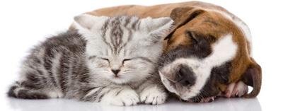
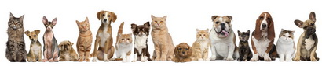
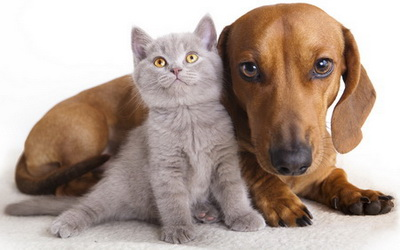

Pas i mačka mogu biti najbolji prijatelji!
Za one koji nisu u dobrim odnosima obično se kaže vole se ko pas i mačka. A da se ove životinje, nekada ljuti neprijatelji, zaista znaju voleti, pomoći jednom drugom u nevolji, najbolje nam pokazuje ove fotografije. Pas je mački, kao i ona njemu, najbolja zaštita od drugih životinja koje nisu prijateljski nastrojene. Za razliku od ljudi, koji jedni drugima, na žalost, često znaju praviti razne smicalice i šta sve ne, ove životinje kao da kazuju da je sreća u ljubavi, saradnji i zajedništvu.
Psi i mačke se lepo slažu što pokazuju i razna istraživanja. Najnovija studija je otkrila da se mačke najbolje slažu sa psima u slučajevima kada je njihov prvi susret bio dok su imali 6 meseci ili manje. Za pse koji imaju duži period učenja tokom odrastanja, ovaj period se produžava do godinu dana. Međusobni govor tela toliko dobro "čitaju" i psi i mačke koje spadaju u gorepomenutu grupu da su naučnici čak bili u prilici da prisustvuju do tada nezabeleženom ponašanju pasa.  Uobičajeno je da psi prvo omirišu jedni drugima genitalije kako bi se upoznali ili prepoznali. U slučaju uspešnih domaćinstava sa više kućnih ljubimaca, pas će možda pomirisati mački nos, što je uobičajena navika mačaka! Mačke su veoma teritorijalne životinje i sigurno da će biti uzmemirene i samim tim manje sposobne da uče ukoliko se izmeste iz svog uobičajenog okruženja, dok teritorija štenaca uglavnom označava onaj prostor gde se nalaze njihovi vlasnici, pre nego neko određeno mesto.
